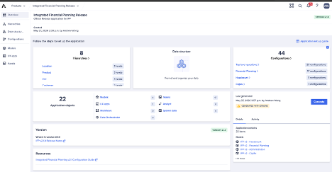

IFP Overview
What IFP 2.1 is, what changed, and how the App Framework works
What IFP Is
Integrated Financial Planning (IFP) is Anaplan's pre-built application for P&L, balance sheet, and headcount planning. It provides a structured, configurator-driven approach to financial planning that eliminates months of model-building time and gives partner consultants a repeatable delivery framework.
Version 2.1 is the current release. It builds on the 2.0 re-architecture which introduced the Application Framework — a configurator-driven model generation system that replaces manual model setup, along with Anaplan Data Orchestrator (ADO) integration and Headcount Planning 2.0. Version 2.1 refines ADO configuration and increases dimensionality limits.
What's New in IFP 2.1
| Capability | What It Is | Why It Matters |
|---|---|---|
| App Framework | Configurator-driven generation — answer questions, generate a model (~500 background actions) | Eliminates weeks of manual module setup; standardizes delivery; takes 20–40 minutes to generate |
| ADO Integration | Anaplan Data Orchestrator fully integrated; publishes links and transformation views automatically | Partners only load source data and push links; dramatically simplifies post-generation ADO setup |
| Headcount Planning 2.0 | Role/job-level HC planning instead of employee-level; integrates with Workforce Budgeting and OWP | Addresses privacy concerns of employee-level data; enables pairing with Workforce Budgeting for deeper HC detail |
| Polaris Architecture | All IFP models run on Polaris (sparsity-aware engine) | Improved performance for sparse data; requires Polaris training as prerequisite; dense hierarchies need dimensionality planning |
| Upgradeability | Future IFP versions can be applied as upgrades without starting from scratch | First-ever upgrade path for IFP; upgrades apply to dev, then pushed through QA/prod via ALM |
| Extensive Re-Architecting | Module naming, list structures, formula patterns all standardized with unique GUIDs on every object | Enables upgrade tracking; easier to maintain, extend, and hand off |
Dimensionality in IFP 2.1
Understanding which dimensions are required vs optional is critical before the first configuration session with a customer.
| Dimension | Required? | Default Levels | Notes |
|---|---|---|---|
| Entity | ✅ Required | 3 | Cannot be removed; can be renamed/repurposed |
| Account | ✅ Required | 3 | Cannot be removed; can be renamed (e.g., to ‘Project’) |
| Location | Optional | 3 | Enable/disable via configurator question |
| Functional Area / Dept | Optional | 3 | Can be renamed (e.g., to ‘Cost Center’) |
| Product | Optional | 3 | Enable for product-level revenue or expense planning |
| Customer | Optional | 3 | Enable for customer-level planning |
| Job | Optional | 4 | Enable for job-level planning; default is 4 levels |
| Vendor | Optional | 3 | Enable for vendor-level expense planning |
The default is 3 levels per dimension, except Job which defaults to 4. Each hierarchy can be reduced to a minimum of 2 levels, or increased up to 15 levels per dimension. When removing levels, the original leaf level must always remain at the bottom. When adding levels, the new level is added at the bottom and must be dragged above the original leaf.
Provisioning Requirements
Before any implementation can begin, the following provisioning steps must be completed by the Anaplan team:
- Customer purchases the IFP application (includes subscription fee covering upgrades)
- Customer Success Business Partner opens a provisioning ticket requesting workspace creation (minimum 100GB)
- For ALM environments (dev/QA/prod), separate workspace provisioning tickets are needed for each environment
- Anaplan team deploys the App Framework to the customer tenant
- Partner and Customer Success Business Partner are notified when deployment is complete
The App Framework can only generate from your default tenant. A partner using their firm email (e.g., john@partnerfirm.com) cannot generate if the customer tenant is not their default. Solution: get an email address in the customer's domain, or have the customer's tenant admin generate while you guide them. Roles required for generation: Application Owner, Workspace Admin, Page Builder, Integration Admin.
Available Documentation
All documentation is available in Seismic and the Anaplan SharePoint site. Key resources:
- Application Overview — Full IFP v2 description; detailed comparison with v1.x; architecture overview
- Configuration Guide — Step-by-step walkthrough of all 44 configuration questions; post-generation task checklist; print this for every implementation
- Process Definition Documents — How IFP processes work end to end
- ADO Data Templates — Excel templates for every hierarchy (location, entity, account, etc.) for customer data preparation (URL pending)
- Functional Walkthrough Videos — 10–15 minute videos covering core functionality; micro lessons on specific features (URL pending)
- Extension FAQ — Best practices for documenting extensions; what survives upgrades; how to prepare for upgrade cycles
- Upgrade FAQ — FAQ on upgrade process, frequency, scope, and partner responsibilities
- IFP 2.0 vs 2.1 Comparison — Detailed changes between releases including ADO enhancements, new dimensions, level ranges (URL pending)
- The Anaplan Way for Applications Methodology — Complete methodology for delivering structured application implementations
Module Architecture
IFPv2 generates a consistent module naming convention across all four models. Understanding this architecture is essential for error log troubleshooting and extension work.
| Prefix | Module Type | Purpose |
|---|---|---|
| ADMIN | Administration | Configuration settings, planning method mapping, user access |
| SYS | System | Cross-model system lists, hierarchy mappings, Boolean controls |
| DAT | Data | Actuals data staging, integrations from ADO and Headcount model |
| INP | Input | Planning input modules — where users enter forecast data |
| CALC | Calculation | Aggregation, allocation, derived calculations from INP modules |
| OUT | Output | Consolidated output modules — feed downstream reports and dashboards |
The App Framework Concept
The App Framework is the configuration and generation engine. The workflow is:
Configure
Answer all configuration questions in the App Framework configurator. These define hierarchy levels, dimensions, planning methods, and scope.
Generate
Trigger generation. The App Framework reads your answers and provisions all four IFP models (Financial Planning, Headcount, Admin, Data Orchestrator). This takes 10–20 minutes.
Review
Inspect the generated model and error logs. 'Generated with errors' is normal and expected — it does not mean the model is broken.
Extend
Add customer-specific extensions on top of the generated base model. Document everything you change.
Every IFP 2.0 generation in a training or early-stage environment produces errors. These are formula errors caused by configuration choices, hierarchy renaming, or geography differences from the base model template. The model is functional. You will learn to read and resolve these errors in the Error Log Review section.
App Framework — Configuration View

IFP Hierarchy Lists

SYS Modules After Generation

App Framework Overview
